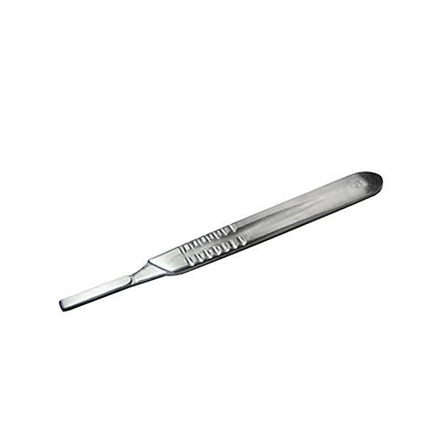
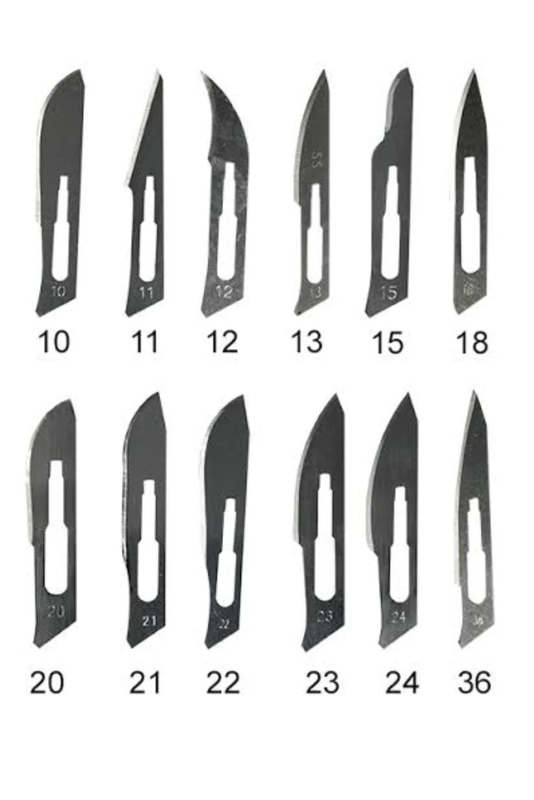
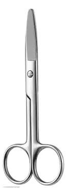

Pestaña: Instrumental de Incisión

Mango de bisturíSoporte para hojas quirúrgicas intercambiables.
Hojas de bisturíCuchillas metálicas afiladas, estériles y generalmente desechables (aunque existen reutilizables) que se acoplan a un mango para realizar incisiones precisas en tejidos biológicos durante procedimientos quirúrgicos, odontológicos o de disección.
Tijeras quirúrgicasPueden ser rectas para cortar sutura o curvas para disección de tejidos.